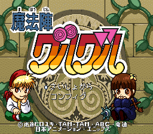
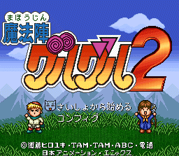

Mahoujin Guru Guru - SNES Games

- Company: Enix
- Date Released: 21 April 1995
- Price (in yen): 10800
- Genre: Action RPG

- Company: Enix
- Date Released: 12 April 1996
- Price (in yen): 8000
- Genre: Action RPG
Anime Video Game Resource Center © 1998 by Luis A. Cruz